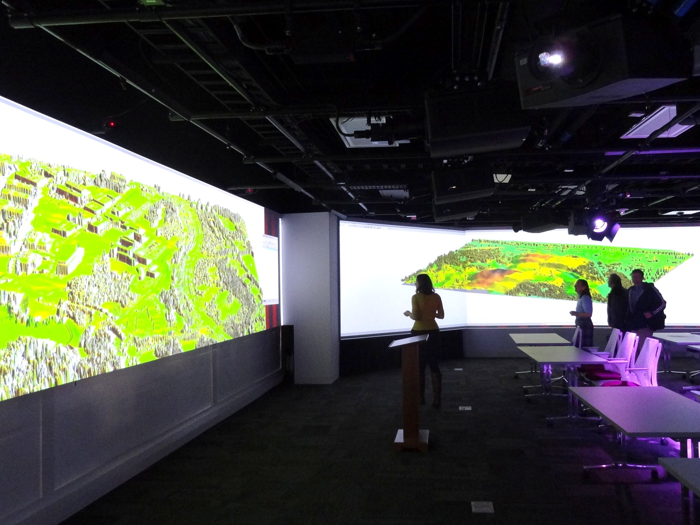

<h1>Multidimensional geovisualization in GRASS GIS</h1>
<h2>Jockey's Ridge terrain evolution</h2>
<figure style="max-width: 90%">

<figcaption>Jockey's Ridge digital terrain model time series: slope (left) and elevation (right). Created with the GRASS GIS Animation Tool.</figcaption>
</figure>

<h2>270&deg; high resolution 3D visualization</h2>
<figure style="max-width: 100%">

&nbsp;

<figcaption>GRASS GIS 3D visualization of Centennial Campus and Jockey's Ridge on 16384 x 1200 screen in <a href="http://www.lib.ncsu.edu/spaces/teaching-and-visualization-lab">Teaching and Visualization Lab in Hunt Library</a>.</figcaption>
</figure>

<h2>Eye tracking data</h2>
<figure style="max-width: 100%">


<figcaption>Space-time cube visualization of eye tracking data collected from people trying to fing their way from one way to other on a campus map (OpenStreetMap.org).</figcaption>
</figure>
